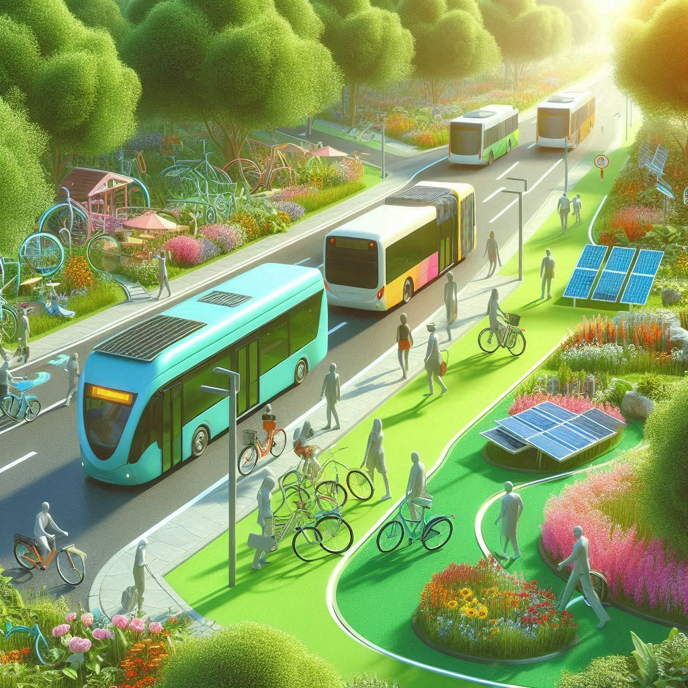

Por que transporte sustentável importa?
O uso de transportes movidos a combustíveis fósseis é uma das maiores causas da emissão de gases de efeito estufa. Promover meios alternativos como bicicleta, caminhada e transporte público ajuda a preservar o planeta.
Impactos do Transporte no Meio Ambiente
- 🚗 Emissão de CO₂
- 💨 Poluição do ar
- 🌡️ Aquecimento global
- 😷 Problemas de saúde pública
Soluções Sustentáveis
- 🚶 Caminhar para destinos próximos
- 🚲 Usar bicicleta ou patinete
- 🚌 Utilizar transporte público
- 🚗 Carona solidária